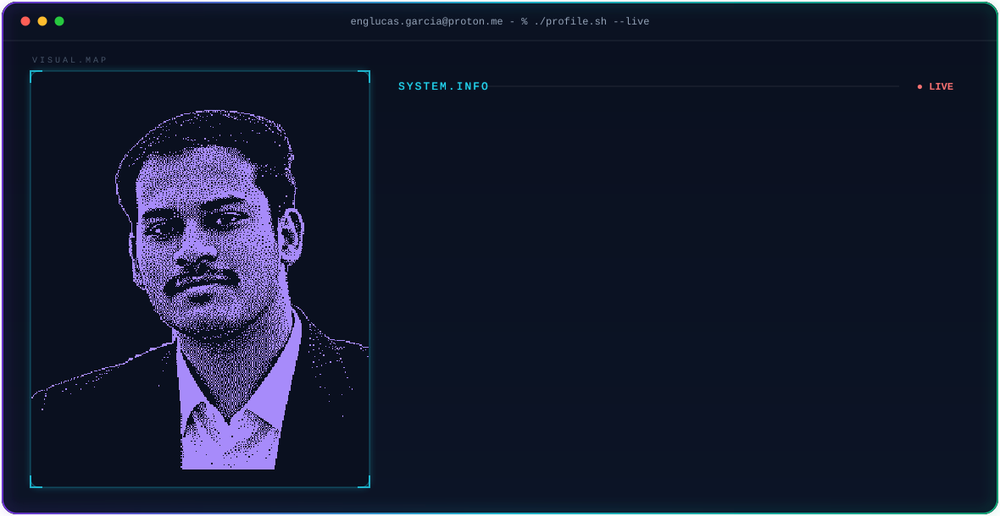

👨💻 About
Sou Engenheiro de Software e Chefe do DTI (Diretoria de Tecnologia da Informação) na Prefeitura Municipal de Quirinópolis — GO, graduado pela UniRV (Universidade de Rio Verde).
Minha trajetória técnica é centrada na construção de sistemas distribuídos resilientes, arquitetura de microsserviços e sustentação de infraestrutura corporativa. Uno engenharia de software moderna (Clean Architecture, DDD, TDD) com governança de ambientes virtualizados em Proxmox VE, garantindo alta densidade, isolamento de recursos e segurança para serviços de missão crítica.
- Foco Técnico: Java (Spring Boot) • Go • TypeScript • Next.js 14 / React 19 • PostgreSQL • Docker • Proxmox VE • AI Agents (LLMs & Whisper)
- Liderança & Governança: Gestão do parque de TI municipal, modernização de processos e alta disponibilidade 24/7
- Princípios de Engenharia: Clean Architecture • Domain-Driven Design • Microservices • High Scalability • Real-Time Systems
🛠️ Tech Stack
Languages
Frontend & UI
Backend & Databases
DevOps, Infra & Cloud
Core Competencies
🚀 Featured Projects
01 · DTI Agent & Platform — Atendimento Inteligente com IA & Gestão Operacional de TI
Ecossistema corporativo completo de suporte técnico e governança operacional para a Prefeitura Municipal de Quirinópolis. Integra um agente de IA autônomo no WhatsApp capaz de realizar triagem inteligente, normalização contextual de locais e transcrição de áudios com um painel operacional em tempo real para os técnicos e gestores.
| Stack Frontend | React 19 • TypeScript • Vite • Tailwind CSS • Framer Motion • @dnd-kit (Kanban) • FullCalendar |
|---|---|
| Stack Backend & IA | Node.js (Express) • TypeScript • Groq SDK (Llama 3.1 & Whisper v3) • WAHA • Prisma • PostgreSQL 16 |
| Recursos em Tempo Real | Triagem inteligente de chamados, transcrição de áudio, fila e Kanban sincronizados via WebSockets (Socket.io) |
| Infra & Alta Disp. | Docker Compose multi-container, virtualização LXC no Proxmox VE, snapshots de recuperação (<2min) e túneis reversos |
| Live Link | Visualizar no Portfólio |
02 · Cê Vai? Tickets — Plataforma SaaS de Venda de Ingressos
Plataforma SaaS desenvolvida para venda de ingressos e gestão inteligente de eventos em tempo real, integrando checkout transacional seguro e controle de portaria via QR Code anti-fraude.
| Stack | Next.js 14 • React • Go (Golang) • PostgreSQL • Tailwind CSS • Framer Motion |
|---|---|
| Escopo | SaaS em produção com gestão simultânea de lotes e produtores |
| Diferencial | Validação sub-100ms em portarias offline/online e blindagem contra double-spending |
| Live Link | Visualizar no Portfólio |
03 · Burger House — Ecossistema de Food Service & Delivery
Aplicação web completa para restaurantes e hamburguerias com catálogo interativo, fluxo de pedido dinâmico, carrinho reativo e painel de despacho integrado para a cozinha.
| Stack | React • Vite • TypeScript • Tailwind CSS • Firebase • Netlify |
|---|---|
| Escopo | Aplicação de ponta a ponta com fluxo de compra em 3 etapas |
| Impacto | Redução de até 40% no tempo de atendimento de balcão e eliminação de pedidos manuais |
| Live Link | Visualizar no Portfólio |
04 · GUIN — Gestão Unificada de Infraestrutura de TI
Sistema interno de governança técnica para inventário de ativos de hardware/software, telemetria de servidores físicos e virtuais (Proxmox) e gestão unificada de chamados municipais.
| Stack | Java (Spring Boot) • TypeScript • PostgreSQL • Docker • Proxmox API • GSAP |
|---|---|
| Escopo | Gestão centralizada dos departamentos e secretarias municipais |
| Diferencial | Monitoramento automatizado de métricas de host (CPU, memória, I/O) e histórico de manutenções |
| Live Link | Visualizar no Portfólio |
05 · DTI Gov Platform — Modernização dos Serviços Públicos Municipais
Infraestrutura de tecnologia da Prefeitura de Quirinópolis, consolidando servidores legados em clusters de virtualização de alta densidade e digitalizando processos cidadãos.
| Stack | Linux Server • Proxmox VE • Docker • PostgreSQL • Nginx Reverse Proxy • Firewall pfSense |
|---|---|
| Escopo | Sustentação e alta disponibilidade para todo o ecossistema institucional público |
| Segurança | Rotinas automatizadas de backup corporativo, redundância de rede e segmentação de VLANs |
💼 Experiência & Liderança
Chefe da Diretoria de Tecnologia da Informação (DTI)
Prefeitura Municipal de Quirinópolis — GO
- Liderança técnica do ecossistema de TI municipal, coordenando infraestrutura de redes, datacenters e sistemas corporativos.
- Concepção e implantação do DTI Agent & Platform: automação inteligente de atendimento com IA (Groq LLM/Whisper) via WhatsApp integrada a frontend gerencial em React 19.
- Planejamento e implantação do cluster virtualizado em Proxmox VE, consolidando servidores físicos com alta densidade e isolamento de falhas.
- Implementação de rotinas de backup corporativo, segurança de dados institucionais e digitalização de serviços ao munícipe.
Software Engineer / Consultor Full Stack
Projetos Corporativos & Freelance
- Desenvolvimento de APIs RESTful e microsserviços em Java (Spring Boot) e Go, com foco em concorrência e baixo consumo de recursos.
- Construção de interfaces reativas e componentizadas em Next.js 14, React 19, TypeScript e Tailwind CSS.